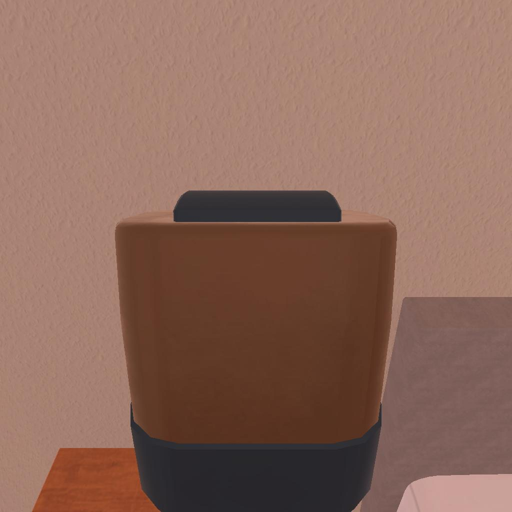

---------------------------------------------------------task: 2---------------------------------------------------------
--------------------------------------------------------------------------------------------------------------------------------------------------------------------
--------------------------------------------------------------------------------------------------------------------------------------------------------------------
Step:--------------------------------------------------------------------------17-------------------------------------------------------------------------------
----------------------------------------
VLM Prompt:
**Task**
Please perform as an embodied AI agent. Our final objective is to look at pen under the desklamp. Below is the plan for completing the task, the current observation, alongside historical data and admissible actions for the next step. Please determine the best action for the next step!
**Plan**
Below is a detailed step-by-step plan to complete the task.
1. Find a pen.
2. Pick up the pen.
3. Locate a desklamp.
4. Turn on the desklamp.
5. Position the pen under the light of the desklamp.
6. Look at the pen under the desklamp.
**Current Observation**
Displayed is an image capturing the current position of the agent.
**History Information**
Displayed are the previous observations with their corresponding actions.
State 1:
1. Step Index in the Plan: 1
2. Objects: (none specified)
3. Action: go to desk 1
State 2:
1. Step Index in the Plan: 1
2. Objects: Pencil, Desk
3. Action: go to drawer 3
State 3:
1. Step Index in the Plan: 1
2. Objects: Pen, Desklamp
3. Action: open drawer 3
State 4:
1. Step Index in the Plan: Post-observation of pen and desklamp, pre-interaction
2. Objects: Pen, Desklamp, Desk, Drawer 3 (opened)
3. Action: open drawer 3
State 7:
1. Step Index in the Plan: Unknown (current task is to pick up the pen)
2. Objects: Pen, Desklamp, Desk, Drawer 3 (open)
3. Action: (20): close drawer 3
State 9:
1. Step Index in the Plan: Not specified but contextually it is the step to pick up the pen.
2. Objects: Pen, Desklamp, Desk.
3. Action: go to desk 1.
State 10:
1. Step Index in the Plan: 9
2. Objects: Pen, Desklamp, Desk
3. Action: take pencil 1 from desk 1
State 11:
1. Step Index in the Plan: Not specified
2. Objects: Pen, Desklamp, Desk
3. Action: examine pencil 1
State 12:
1. Step Index in the Plan: Unknown
2. Objects: Pen, Desk, Desklamp (not visible)
3. Action: go to sidetable 1
State 13:
2. Step Index in the Plan: 10
3. Objects: Desk, Pen
4. Action: put pencil 1 in/on sidetable 1
State 14:
1. Step Index in the Plan: 2
2. Objects: Pen, Desk
3. Action: take pen from desk
State 15:
2. Step Index in the Plan: 3
3. Objects: Speaker or Cylindrical Object (irrelevant to current step)
4. Action: go to desk 1
State 16:
1. Step Index in the Plan: 4
2. Objects: Speaker or Cylindrical Object (irrelevant)
3. Action: go to sidetable 1
State 17:
1. Step Index in the Plan: 6
2. Objects: Pen, Desklamp
3. Action: go to sidetable 1
**Admissible Actions**
(1): go to bed 1
(2): go to dresser 1
(3): go to bed 2
(4): go to drawer 1
(5): go to drawer 2
(6): go to sidetable 2
(7): go to drawer 3
(8): go to drawer 4
(9): go to garbagecan 1
(10): go to drawer 5
(11): go to drawer 6
(12): go to drawer 7
(13): go to drawer 8
(14): go to drawer 9
(15): go to drawer 10
(16): go to drawer 11
(17): go to safe 1
(18): put alarmclock 1 in/on sidetable 1
(19): examine alarmclock 1
**Analysis Guideline**
1. Analyze the history and current observation, and then determine our current step in the plan and our current place.
2. List all visible objects related to the task in the current observation, without summarizing any as "various items."
3. Analyze the objects in the current observation based on the history and the requirements for the current step, and then determine if we can complete the step with the current observation.
4. Analyze and decide on the most appropriate action to take.
5. Summarize the analysis using the following format: "Analysis: [The summarization of the analysis], The Most Appropriate Action: (i which is the integer.): [Selected action]"
**Notes**
1. We must complete each step of the plan in order and cannot skip steps when the previous ones are not finished.
2. For "Go to" actions listed as "go to xxx [n]", interpret this as there are n distinct actions available: "go to xxx 1", "go to xxx 2", ..., "go to xxx n". Select one specific action from these options instead of using "go to xxx [n]".
3. If receptacles such as drawers, cabinets, and so forth are closed in the current observation, we may try to open them.
4. Pay attention to synonyms and ensure clarity in the terms used.
5. We must determine and provide the single action which must be in the **Admissible Actions**.
6. If there is no history available, we are at the first step and the current place is "Unknown".
**Answer**
Please select the most suitable action by following the **Analysis Guideline**, keeping the above **Notes** in mind.
----------------------------------------
----------------------------------------
VLM Response:
Analysis: The current step in the plan is to look at the pen under the desklamp, which is step 6. The current observation shows a cylindrical object which, based on previous history (State 17), is likely the desklamp. However, the pen is not visible in the current observation. Since the pen was last interacted with in State 14 when it was picked up from the desk, and the last known location of the desklamp was on the sidetable, we should move to the sidetable to position the pen under the desklamp's light. None of the admissible actions mention the sidetable, but action 6, "go to sidetable 2," seems to be the closest match to our required next action.
The Most Appropriate Action: (6): go to sidetable 2.
----------------------------------------
----------------------------------------
>>> Refine VLM Response and Get Pure Action: go to sidetable 2
----------------------------------------
-----------------------------------------------------------------
Running time: 7.5152037143707275 seconds
Total Money: 0
-----------------------------------------------------------------
-----------------------------------------------------------------
Summarization Prompt:
**Context**
Analysis: Since there is no history information, we are at the first step in the plan, which is to find a statue. The current place is unknown. In the current observation, we see a floorlamp next to an armchair with a small table that has a small object on it, which could potentially be the statue we are looking for. Since the plan requires us to find a statue first and it appears there might be one on the table next to the armchair, we should investigate this object to determine if it is the statue we need.
The Most Appropriate Action: (1): go to armchair 1
**Summary**
1. Step Index in the Plan: 1
2. Objects: Floorlamp, Armchair, Small Table, Small Object (potential statue)
3. Action: go to armchair 1
**Context**
Analysis: The current step in the plan is to look at the pen under the desklamp, which is step 6. The current observation shows a cylindrical object which, based on previous history (State 17), is likely the desklamp. However, the pen is not visible in the current observation. Since the pen was last interacted with in State 14 when it was picked up from the desk, and the last known location of the desklamp was on the sidetable, we should move to the sidetable to position the pen under the desklamp's light. None of the admissible actions mention the sidetable, but action 6, "go to sidetable 2," seems to be the closest match to our required next action.
The Most Appropriate Action: (6): go to sidetable 2.
Please summarize the context by following above examples when providing the summary, and ensure that only the summary is included, without any extra explanation.
**Summary**
-----------------------------------------------------------------
-----------------------------------------------------------------
Summarization Response:
1. Step Index in the Plan: 6
2. Objects: Desklamp, Pen, Sidetable
3. Action: go to sidetable 2
-----------------------------------------------------------------
-----------------------------------------------------------------
Text Observation:You arrive at loc 6. On the sidetable 2, you see a pillow 1, a desklamp 1, a keychain 1, a creditcard 1, and a pencil 2.
-----------------------------------------------------------------
UNSUCCEED